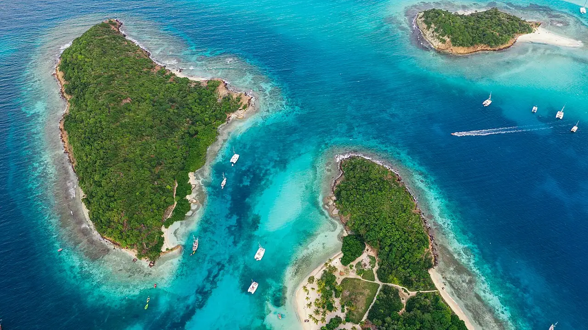

Tobago Cays
Grenadines, Saint-Vincent-et-les-Grenadines · snorkeling, baignade

Cinq îlots inhabités entourés d’un vaste récif, au cœur d’un parc marin des Grenadines. On y nage avec les tortues vertes au-dessus des herbiers, près de l’îlot de Baradal.
- Lieu
- Grenadines, Saint-Vincent-et-les-Grenadines
- Niveau
- Débutant
- Activités
- snorkeling, baignade
- Type d'eau
- Mer / océan
- Coordonnées
- 12.63, -61.35 (position approximative du secteur)
Dangers à connaître
- Annexes et bateaux nombreux au mouillage : nage bien visible, idéalement avec une bouée.
- Courant et clapot près des passes du récif.
Le conseil d'Ocean Buddy
On y accède en bateau depuis Union Island ou Mayreau ; un droit d’entrée au parc marin est perçu sur place.
Ouvrir dans Ocean Buddy Télécharger sur l'App Store
Source : Fiche Ocean Buddy · septembre 2026 · à vérifier localement.